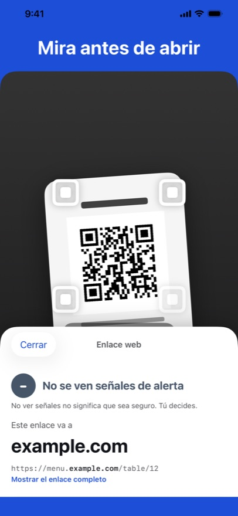
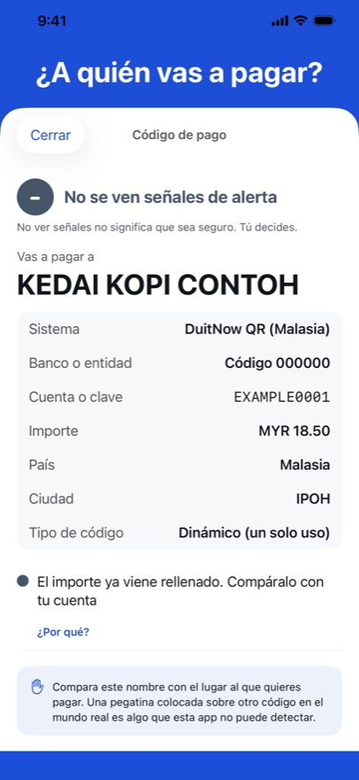
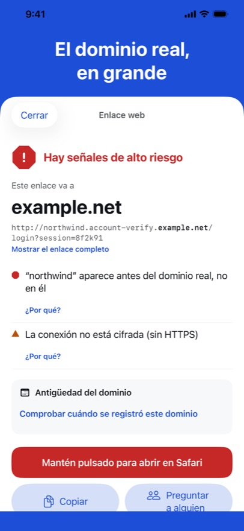

QR Trust Scanner te muestra adónde lleva un código QR o un enlace antes de tocar: el dominio real en grande, lo que merece una segunda mirada y, si es un código de pago, quién recibe el dinero. Nunca abre nada por su cuenta, y todo se revisa en tu iPhone.



El dominio real, en grande
Un enlace puede poner cualquier palabra conocida delante de la dirección de otra persona. La app te muestra primero el dominio real.
¿A quién vas a pagar?
En los códigos QR de pago con estándar EMVCo que se usan en Vietnam, Brasil, Indonesia y Malasia: el destinatario, el importe y si el valor de verificación del código es correcto.
Señales, no veredictos
Cada señal es una frase clara con un «¿Por qué?». Tres niveles, y tú decides.
Próximamente en la App Store
Datos abiertos que usamos
- Lista de alertas: PhishDestroy «destroylist» (github.com/phishdestroy/destroylist), licencia MIT, © 2019 PhishDestroy.
- Public Suffix List (publicsuffix.org), Mozilla Public License 2.0.
- IANA: la lista de terminaciones de dominio de la zona raíz y el registro de arranque RDAP.